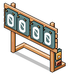
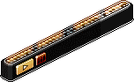
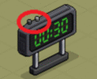
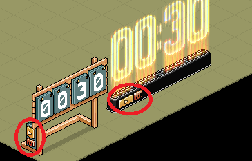
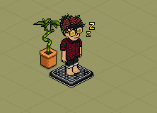
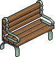
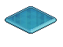
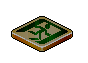
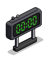
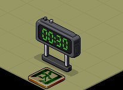

|
|
|
Nr. 8: Timer und AFK-Bank
Inhalt:
1. Einführung
2. Timer Anleitung
3. AFK-Bank
1. Einführung
Timer werden sehr oft bei Games verwendet, finden aber in vielen anderen Bereichen auch Anwendung. Sie lassen sich mit Wireds kombinieren und bilden daher ein wichtiges Instrument. Es gibt drei Timer, die von der Funktion identisch sind und nur optische Unterschiede aufweisen. Eine einfache Anwendung von Timer sind AFK-Bänke. Die Funktion des Timers und die AFK-Bänke sind Thema dieses Beitrags. Als Beispiel werden wir den Countdown-Timer verwenden (Bild links).
Inhalt:
1. Einführung
2. Timer Anleitung
3. AFK-Bank
1. Einführung
Timer werden sehr oft bei Games verwendet, finden aber in vielen anderen Bereichen auch Anwendung. Sie lassen sich mit Wireds kombinieren und bilden daher ein wichtiges Instrument. Es gibt drei Timer, die von der Funktion identisch sind und nur optische Unterschiede aufweisen. Eine einfache Anwendung von Timer sind AFK-Bänke. Die Funktion des Timers und die AFK-Bänke sind Thema dieses Beitrags. Als Beispiel werden wir den Countdown-Timer verwenden (Bild links).

Countdown-Timer
|
 FREEZE Spielcomputer
|
 Battle Banzai Spielcomputer
|
2. Timer Anleitung
Standardmäßig ist der Timer auf 00:30 (30 Sekunden) eingestellt. Mit Doppelklick auf den Timer läuft die Zeit ab. Während die Zeit abläuft und man erneut einen Doppelklick betätigt stoppt die Zeit und bei einem weiteren Mal läuft sie zum gestoppten Zeitpunkt weiter.
Standardmäßig ist der Timer auf 00:30 (30 Sekunden) eingestellt. Mit Doppelklick auf den Timer läuft die Zeit ab. Während die Zeit abläuft und man erneut einen Doppelklick betätigt stoppt die Zeit und bei einem weiteren Mal läuft sie zum gestoppten Zeitpunkt weiter.
Auf den Timer gibt es einen dunklen und einen hellen Knopf. Der dunklere ist die “Play” Taste, um diesen zu betätigen, muss man einen Doppelklick darauf machen. Damit startet der Timer genauso, wie wenn man allgemein auf den Timer einen Doppelklick macht. Die helle Taste stellt die Zeit ein, die man haben möchte. Auch hier muss man durch Doppelklick auf die Taste die Funktion ausführen. Die Zeiten sind: 00:30, 01:00, 02:00, 03:00, 05:00 und 10:00. Leider kann man die Zeit nicht beliebig einstellen. Bei den anderen beiden Timern entspricht die dunkle Taste den Knopf mit dem “Play” Symbol und die helle Taste entspricht bei den anderen Timer den Knopf, der ähnlich aussieht wie ein “Empfangsbalken”.
|
 Die zwei Tasten
|
|
 Die Funktion der Tasten sind gleich
|
3. AFK-Bank
Eine sehr einfache und universelle Anwendung für Timer sind AFK-Bänke. Das Prinzip von AFK-Bänken liegt meistens darin, dass User innerhalb von einigen Bänken alle x Sekunden teleportiert werden. Dadurch werden sie bei Inaktivität nicht automatisch aus dem Raum geworfen. Das Teleportieren verhindert also, dass der Avatar einschläft. Nach 15 Min Inaktivität wird man aus einem Raum, wo man selbst nicht der Raumbesitzer ist automatisch rausgeworfen.
Eine sehr einfache und universelle Anwendung für Timer sind AFK-Bänke. Das Prinzip von AFK-Bänken liegt meistens darin, dass User innerhalb von einigen Bänken alle x Sekunden teleportiert werden. Dadurch werden sie bei Inaktivität nicht automatisch aus dem Raum geworfen. Das Teleportieren verhindert also, dass der Avatar einschläft. Nach 15 Min Inaktivität wird man aus einem Raum, wo man selbst nicht der Raumbesitzer ist automatisch rausgeworfen.

Teleportation verhindert das automatische Rauswerfen
Aufbau eines AFK-Banks:
2 x Bänke mit je 2 Plätzen
4 x Freeze Boden + 4 x ByeBye Boden
1 x Wired-Stapel: Effekt wiederholen + Möbelzustände umschalten
1 x Timer

Parkbank
|
 FREEZE Boden
|
 ByeBye Boden
|

WIRED Auslöser: Effekt wiederholen

WIRED Effekt: Möbelzustände umschalten

Countdown-Timer
Zuerst werden vier Freeze Böden an der Stelle platziert, wo dann die Bänke sein sollen. Darauf kommen vier ByeBye Böden. Auf den vier Böden werden die Parkbänke (können natürlich auch andere Sitzplätze sein) mit dem Stapelfeld platziert.
Der Timer wird auf 30 s (00:30) gesetzt und mit den Wireds Effekt wiederholen und Möbelzustände umschalten dauerhaft laufen gelassen. Im Effekt Wired wird der Timer fixiert (d. h. ausgewählt) und im Auslöser Wired wird die Auslösezeit auf 0,5 s gesetzt.
Das Wired "Möbelzustände umschalten" schaltet in diesem Fall nicht wie gewohnt um, sodass der Timer an und aus geht, sondern er kann den Timer nur anschalten und startet ihn somit neu. Der Spielstart (Timer wird angeschalten) wird vom ByeBye Boden erkannt und leuchtet auf. Wird der Timer beendet ist der ByeBye Boden wieder dunkel. Der Timer ist also mit dem ByeBye Boden verknüpft.

ByeBye Boden leuchtet auf bei Timestart und wird wieder dunkel, wenn der Timer beendet
Wenn der Timer startet und ein User sich auf einem Freeze Boden befindet wird er zum ByeBye Boden teleportiert. Vorausgesetzt er ist in keinen Team drin. Das System erkennt den User als "Verlierer" an, weil er in keinen Team ist und damit 0 Punkte hat. Bei dem Game Freeze hat man nämlich dann verloren, wenn man keine Punkte mehr hat, danach wird man zum ByeBye Boden (auch Exit Boden genannt) teleportiert. Sind mehrere ByeBye Böden im Raum wird man zu einem zufälligen teleportiert. Und da hier die ByeBye Böden immer auf Freeze Böden liegen, verlässt man das Spielfeld nie und wird immer weiter teleportiert sobald der Timer neu startet. Wenn man den Timer auf 30 s stellt wird man alle 30 s teleportiert.
AFK-Bänke können natürlich auch rein mit Wireds eingestellt werden, wird aber bei gewöhnlichen Räumen nicht sehr oft gemacht, da dies mehr Aufwand bedeuten kann. Erweiterte Varianten, um nicht aus dem Raum nach Inaktivität geworfen zu werden, werden z. B. auch für AFK-Level eingesetzt.
Zusammenfassung, was ist wichtig?
- Timer werden oft für die Spielzeit-Einstellung gebraucht
- Timer lassen sich mit Wireds kombinieren; manche Möbel wie ByeBye Böden reagieren automatisch auf Timer
- Es gibt 3 Timer die von der Funktion identisch sind und nur optische Unterschiede aufweisen
- Timer können nur auf die Zeiten: 00:30, 01:00, 02:00, 03:00, 05:00 und 10:00 eingestellt werden
- Timer können für Afk-Bänke verwendet werden, diese sorgen dafür, dass man bei Inaktivität nicht aus dem Raum geworfen wird
- Das Teleportieren ist im Eigentlichen dafür verantwortlich, dass man nicht aus dem Raum geworfen wird
- Der Timer wird durch das Wired "Möbelzustände umschalten" gestartet und schaltet nicht wie üblich einen Zustand um, das bedeutet, der Timer kann durch diesen Wired nur angeschalten aber nicht ausgeschalten werden
- Befindet man sich auf einen Freeze Boden während der Timer startet wird man zum ByeBye Boden teleportiert, solange man in keinem Team ist